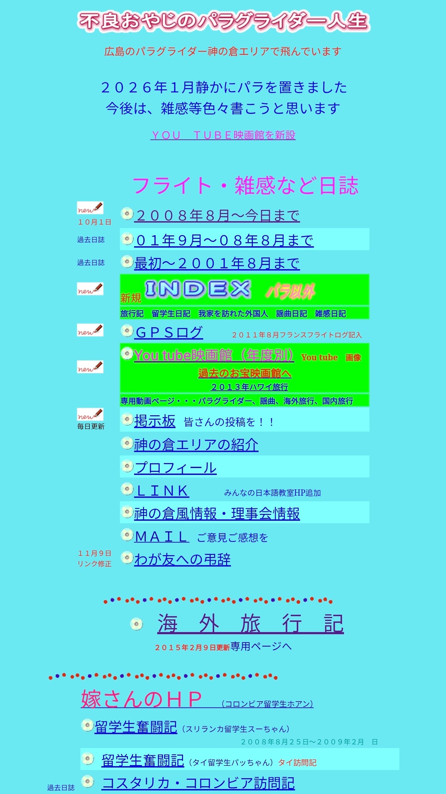

개드립 간 '료칸에서 우연히 지갑 주워서 주인 찾아준 유튜버' 보고 너무 감명 깊어서 좀 더 찾아봄
일단 아래는 이전 개드립 간거
(https://www.dogdrip.net/730380470)
이까지가 전 글 내용임. 댓글 보니까 저 할아버지가 개인 운영하는 홈페이지가 있대서 찾아 들어가봄

완전 레트로 홈피 그 자체 (https://furyouoyaji.boy.jp/)
일기 쓰시고 기록 남기는 홈페이지였음
여기저기 들어가보니 저 유튜버 만난 날의 일기도 있어서 번역해왔음.
아래는 할아버지 일기 번역
10월 1일, 마음씨 좋은 청년과의 만남
대학교 동창회는 2년마다 임원들이 돌아가며 맡아 각지에서 개최된다.
이번에는 부부 동반으로 이카호 온천에 있는 호텔 코구레에 가기로 했다.
히로시마 공항에서 오전 9시 20분 비행기를 탔다. 하네다 공항에서 모노레일을 타고 하마마쓰초역으로 이동한 뒤, 도쿄역에서 신칸센으로 갈아타 다카사키역을 거쳐 시부카와역에 도착했다.
도쿄역에는 다양한 환승 통로와 출구가 있었지만, 적절한 안내 표지판이 있었고 바닥에는 색깔별로 이동 경로가 표시되어 있었다. 덕분에 나처럼 고령인 사람도 안심하고 이동할 수 있었다.
시부카와역에서 간에쓰 교통의 노선버스에 올라탔다. 우리를 포함해 7~8명 정도가 타고 이카호 온천을 향해 출발했다. 현지 주민들도 중간에 타고 내리는 가운데, 약 25분 만에 종점인 이카호 온천에 도착했다.
오늘 묵을 호텔 고구레는 버스 정류장 바로 앞에 간판이 보였다. 비탈길을 3분 정도 내려가니 호텔에 도착했다.
로비에서 2년 만에 만난 동창들과 반가운 재회를 나누고 회비를 내려고 작은 가방을 뒤졌다.
어라!! 지갑이 없다!
주머니도 뒤져 봤지만 어디에도 없었다!
버스에서 내릴 때 버스 요금을 내면서 아내와 내 요금 두 사람분을 지불하려고 지갑에서 1,000엔 지폐를 꺼냈다. 그런데 그때부터 호텔까지 오는 불과 5분 사이에 지갑을 잃어버렸단 말인가??
간에쓰 교통에 전화해 조금 전 종점에 도착했던 운전기사에게 차 안을 찾아봐 달라고 부탁했다.
버스 안에서 지갑을 꺼내 1,000엔 지폐를 꺼냈는데, 혹시 어디에 떨어져 있지 않겠느냐고 물었다.
계속 추궁하다가는 운전기사를 의심하는 꼴이 될 것 같아, 찾아봐 주셔서 감사하다고 인사하고 전화를 끊었다.
평소 현금을 주로 사용하는 나는 히로시마를 출발할 때 지갑에 거의 20만 엔이나 넣어 두었다.
큰아들에게 호텔 계좌로 돈을 송금해 달라고 부탁해야 하나 하는 생각까지 들었다.
버스 정류장에서 호텔까지 오는 길에 떨어뜨렸을까 싶어 눈을 크게 뜨고 주변을 살피며 버스 정류장으로 급히 돌아갔다.
역시 지갑은 보이지 않았다! 아이고, 이 일을 어쩌나….
시부카와역에 있는 가게에서 음료를 샀던 기억이 나서, 혹시 역에 있을까 싶어 다시 돌아가 볼까 생각했다.
마침 5분 뒤면 버스가 도착할 예정이었다. 나는 버스 정류장 표지판을 세워 둔 콘크리트 받침대에 걸터앉아 멍하니 있었다.
그때였다.
저쪽에서 젊은 남자 한 명이 걸어왔다.
그가 나에게 물었다.
“무슨 일이 있으세요?”
지갑을 잃어버렸다고 말하기도 뭐해서 “버스를 기다리고 있습니다”라고 대답했다.
그런데 그가 뜻밖의 질문을 했다.
“어디에서 오셨어요?”
“히로시마에서 왔습니다.”
그러자 그가 내 지갑을 보여 주며 말했다.
“이거, 선생님 것인가요?”
너무 놀랍고 안심이 되어 그 자리에 주저앉을 뻔했다.
“고맙습니다! 정말 고맙습니다!”
나는 몇 번이고 감사 인사를 했다.
그는 지갑을 주우면서 이렇게 말했다.
“버스에서 내리신 곳에 떨어져 있었습니다.”
알고 보니 그 청년은 일행 한 명과 함께 나와 같은 버스를 타고 있었다. 그래서 내 얼굴도 기억하고 있었던 모양이다.
그는 한국인이었고, 두 사람이 함께 온천 여행을 왔다고 했다.
근처 호텔에서 체크인을 마친 뒤, 지갑을 파출소에 맡기기 전에 혹시 주인이 근처에 있는지 확인해 보려고 버스 정류장에 잠깐 들렀다는 것이다.
그가 지갑을 건네주자, 나는 안에 들어 있던 운전면허증을 꺼내 보여 주며 내가 지갑 주인이라는 사실을 확인시켜 주었다.
그는 별다른 의심 없이 이렇게 말했다.
“안에 있는 물건을 확인해 보세요.”
하지만 이렇게 마음씨 좋은 청년에게 돈이 얼마나 들어 있는지 확인할 필요가 있을 리 없었다.
습득물의 주인에게 돌려주면 사례금으로 10분의 1을 줘야 한다는 생각이 문득 스쳐 지나갔다….
그런데 청년이 너무나도 훌륭한 사람이었기에, 1만 엔짜리 지폐를 꺼내 건네기가 망설여졌다.
나 역시 다른 사람의 물건을 주웠다고 해서 사례금을 받지는 않을 것이다. 상대방이 고마워하는 마음만으로도 충분하니까.
그렇다고 사례금을 내밀어 상대방이 어떻게 반응하는지 떠볼 마음도 들지 않았다.
뭐랄까, 그 청년이 너무나도 좋은 사람이었기에 그의 친절을 돈으로 보답한다는 것이 오히려 마음에 걸렸다고 할까….
그런 마음이 더 컸기 때문에 결국 사례금을 주겠다는 말을 꺼내지 못했다. 그게 당시 내 솔직한 심정이었다.
나는 그에게 물었다.
“혹시 명함이 있으신가요?”
하지만 명함은 가지고 있지 않다고 했다.
일본어도 유창하게 하는 청년이라, 꼭 친구가 되고 싶다는 생각이 들었다.
나는 내 명함을 건네며 부탁했다.
“꼭 이메일 보내 주세요.”
내가 패러글라이딩을 하는 이야기, 유학생들과 교류하는 이야기, 그리고 내 홈페이지에 관한 이야기도 조금 나눴다.
그는 서울에 살고 있다고 했다. 주소를 알게 되면 뭔가 선물이라도 보내고 싶었다.
서울에도 한번 찾아가 보고 싶다고 이야기했다.
그는 히로시마에도 와 본 적이 있다고 했다. 그래서 히로시마에 다시 오게 되면 꼭 연락해 달라고 약속했다.
우리는 함께 사진도 찍었다. 그 사진을 내 홈페이지에 올려도 괜찮겠느냐고 물었더니 흔쾌히 허락해 주었다.
그가 우선 버스 정류장에 잠깐 들러 상황을 살펴봐 준 덕분에, 나는 불과 5분 뒤 시부카와역으로 가는 버스에 올라타기 직전 그를 만날 수 있었다.
정말 짧은 순간에 이루어진, 정확히 맞아떨어진 만남이었다!
이렇게 신기한 인연에 대해 그 청년 역시 뭔가 특별한 느낌을 받은 듯했다.
우리는 몇 번이고 악수를 나누며 거듭 감사 인사를 했다.
정말로 다시 만날 수 있다면 얼마나 좋을까!
10월 9일, 태 씨와 연락이 닿았다
히로시마에 돌아온 것은 10월 5일이었다. 7일에 위에 적은 홈페이지에 그날의 일을 올렸더니, 기다리고 있던 태 씨에게서 9일에 이메일을 받았다.
--------------------------------------
태 씨에게서 온 이메일
안녕하세요.
며칠 전 이카호 온천에서 만났던 한국인 '태'입니다.
사실 저는 청년이라기보다는 40대 후반의 아저씨에 가까운데, 청년으로 기억해 주신 것에 감사드립니다. (웃음)
홈페이지에 올라온 글을 읽고 그날의 일을 다시 한번 떠올렸습니다.
정말 신기한 인연이라는 생각이 듭니다.
저도 개인적으로 유튜브 채널을 운영하고 있습니다. 일본 여행을 계획하는 한국 분들을 대상으로 일본 여행 정보를 소개하는 채널입니다.
괜찮으시다면 이번 일을 제 유튜브에서도 소개해도 될까요?
평소 영상에서는 제 얼굴을 공개하지 않고 있습니다만, 당시 버스 정류장에서 촬영하던 영상의 마지막 부분에 손을 흔들며 떠나는 장면이 있는데, 그때 제 얼굴이 잠깐 나옵니다.
그 부분도 괜찮으실지 조금 신경이 쓰입니다.
영상에는 한국어 자막만 들어가 있지만, 유튜브 설정에서 일본어 자막을 켜시면 내용을 확인하실 수 있습니다.
영상 링크를 보내드리겠습니다. 확인하신 뒤 답장해 주시면 감사하겠습니다.
잘 부탁드립니다.
태 드림
--------------------------------------
10월 9일 — 내가 보낸 답장
태 씨의 이메일을 기다리고 있었습니다.
덕분에 이렇게 연락을 주고받으며 이야기를 나눌 수 있게 되어 안심했습니다.
히로시마에 돌아와 태 씨와의 만남에 관한 글을 홈페이지에 올렸습니다.
대학교 친구들, 고등학교 친구들, 패러글라이딩 동호회 친구들, 시노부에(일본 전통 피리) 동호회 친구들, 요곡(일본 전통 가무극인 노가쿠의 노래) 동호회 친구들까지, 100명 가까운 지인에게 제 홈페이지를 소개했습니다.
다들 “정말 훌륭한 사람을 만났구나!”라며 감동적인 이메일을 보내 주었습니다.
태 씨의 유튜브 영상은 제 보물로 간직하겠습니다.
제 친구들에게도 태 씨의 영상을 소개하게 해 주세요.
한 가지 부탁이 있습니다. 태 씨가 보내 주신 이 이메일 내용을 제 홈페이지에 올려도 될까요?
'마음씨 좋은 청년'(웃음) 태 씨를 소개하고 싶습니다.
저는 겉보기보다 나이가 많은 82세 노인입니다. (웃음)
태 씨의 유튜브 영상 URL도 홈페이지에 붙여 놓겠습니다.
물론 제 얼굴이 공개되는 것은 괜찮습니다.
그런데 태 씨의 유튜브 영상 제목에는 15만 엔이라고 되어 있는데, 일본어 자막에는 150만 엔으로 나옵니다. 그 부분은 수정해 주세요.범죄자들이 찾아오면 무섭잖아요. (웃음)
히로시마에 오실 일이 생기면 꼭 연락해 주세요.
함께 식사하면서 여러 이야기를 나눕시다.
--------------------------------------
10월 9일 — 태 씨의 답장
이메일을 보내 주셔서 감사합니다.
제 영상을 보물로 간직하겠다고 말씀해 주셔서 저도 정말 기쁩니다.
말씀해 주신 150만 엔 부분은 15만 엔으로 수정하여, 10월 12일 월요일 오후 5시에 영상을 공개할 예정입니다.
그때까지는 영상을 보실 수 없으니, 공개된 뒤 홈페이지에 소개해 주시고 친구분들에게도 알려 주시면 기쁘겠습니다.
아직 언제가 될지 확실하게 말씀드릴 수는 없지만, 다음 일본 여행 때는 꼭 히로시마에 가 보고 싶습니다.
히로시마에 갈 수 있게 된다면 함께 식사하면서 여러 이야기를 나누는 것도 분명 즐거울 것 같습니다.
앞으로도 잘 부탁드립니다.
마음씨 좋은 청년, 태 드림
--------------------------------------
추가로 쓴 글
나중에 태 씨의 유튜브 영상을 확인해 보니, 구독자가 7만 명이 넘는 유튜버였다.
유튜브 영상 화면 오른쪽 아래에 있는 자막 아이콘을 누르면 일본어 자막을 볼 수 있다.
영상에는 이미 댓글이 500개나 달려 있었고, 일본어로도 읽을 수 있어서 시청자들의 반응을 흥미롭게 읽어 보았다.
태 씨가 히로시마에 와서 함께 이야기를 나눌 날이 무척 기다려진다.
10월 17일 아침, 태 씨의 유튜브 영상을 보았다.
불과 나흘 만에 조회 수 38만 회를 기록한, 본격적인 유튜버였다.
좋아요는 4,130개로 반응이 대단했다! 댓글도 600개나 달려 있었다.
구독자 수는 7만 1,500명!
요즘은 재미없는 텔레비전 방송은 보지 않고 유튜브 영상에 푹 빠져 있다.
가짜 정보나 민폐를 끼치는 영상도 있지만, 나는 제대로 된 영상만 보고 있다.
태 씨의 영상은 한국인들에게 일본 여행을 안내하는 내용이다.
일본을 소개해 주니 더할 나위 없이 기쁘다.
게다가 태 씨가 유튜버로서 생계를 유지할 수 있을 정도로 활동하고 있다면 그보다 더 기쁜 일도 없을 것이다.
요즘 소년들이 장래 희망으로 유튜버를 꼽는 경우가 상위권을 차지한다고 한다.
다음에 태 씨를 만나게 되면 그런 이야기도 물어보고 싶다.
한국인 테 씨와의 만남은 평생 마음속에 남을 특별한 사건이었다.
테 씨가 히로시마에 오면 어디를 함께 다닐지 지금 생각하고 있다.
하루빨리 다시 만나고 싶다!
------------------------------------------------------------------------------------------------------------------
너무 훈훈해서 장문이지만 한번 가져와 봤음
점심 먹으면서 인류애 충전하고 가셈
유튜버 이름: 레디꼬
진짜 영상 봤지만 대단하더라